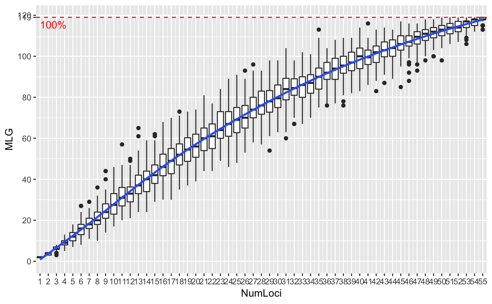

Genotype accumulation curves are useful for determining the minimum number of loci necessary to discriminate between individuals in a population. This function will randomly sample loci without replacement and count the number of multilocus genotypes observed.
genotype_curve(gen, sample = 100, maxloci = 0L, quiet = FALSE, thresh = 1, plot = TRUE, drop = TRUE, dropna = TRUE)
| gen | |
|---|---|
| sample | an |
| maxloci | the maximum number of loci to sample. By default,
|
| quiet | if |
| thresh | a number from 0 to 1. This will draw a line at that fraction of multilocus genotypes, rounded. Defaults to 1, which will draw a line at the maximum number of observable genotypes. |
| plot | if |
| drop | if |
| dropna | if |
(invisibly by deafuls) a matrix of integers showing the results of each randomization. Columns represent the number of loci sampled and rows represent an independent sample.
Internally, this function works by converting the data into a
loci object, which represents genotypes as a data
frame of factors. Random samples are taken of 1 to n-1 columns of the
matrix and the number of unique rows are counted to determine the number of
multilocus genotypes in that random sample. This function does not take
into account any definitions of MLGs via mlg.filter or
mll.custom.
data(nancycats) nan_geno <- genotype_curve(nancycats)#> Calculating genotypes for 1/8 loci. Completed iterations: 1% Calculating genotypes for 1/8 loci. Completed iterations: 2% Calculating genotypes for 1/8 loci. Completed iterations: 3% Calculating genotypes for 1/8 loci. Completed iterations: 4% Calculating genotypes for 1/8 loci. Completed iterations: 5% Calculating genotypes for 1/8 loci. Completed iterations: 6% Calculating genotypes for 1/8 loci. Completed iterations: 7% Calculating genotypes for 1/8 loci. Completed iterations: 8% Calculating genotypes for 1/8 loci. Completed iterations: 9% Calculating genotypes for 1/8 loci. Completed iterations: 10% Calculating genotypes for 1/8 loci. Completed iterations: 11% Calculating genotypes for 1/8 loci. Completed iterations: 12% Calculating genotypes for 1/8 loci. Completed iterations: 13% Calculating genotypes for 1/8 loci. Completed iterations: 14% Calculating genotypes for 1/8 loci. Completed iterations: 15% Calculating genotypes for 1/8 loci. Completed iterations: 16% Calculating genotypes for 1/8 loci. Completed iterations: 17% Calculating genotypes for 1/8 loci. Completed iterations: 18% Calculating genotypes for 1/8 loci. Completed iterations: 19% Calculating genotypes for 1/8 loci. Completed iterations: 20% Calculating genotypes for 1/8 loci. Completed iterations: 21% Calculating genotypes for 1/8 loci. Completed iterations: 22% Calculating genotypes for 1/8 loci. Completed iterations: 23% Calculating genotypes for 1/8 loci. Completed iterations: 24% Calculating genotypes for 1/8 loci. Completed iterations: 25% Calculating genotypes for 1/8 loci. Completed iterations: 26% Calculating genotypes for 1/8 loci. Completed iterations: 27% Calculating genotypes for 1/8 loci. Completed iterations: 28% Calculating genotypes for 1/8 loci. Completed iterations: 29% Calculating genotypes for 1/8 loci. Completed iterations: 30% Calculating genotypes for 1/8 loci. Completed iterations: 31% Calculating genotypes for 1/8 loci. Completed iterations: 32% Calculating genotypes for 1/8 loci. Completed iterations: 33% Calculating genotypes for 1/8 loci. Completed iterations: 34% Calculating genotypes for 1/8 loci. Completed iterations: 35% Calculating genotypes for 1/8 loci. Completed iterations: 36% Calculating genotypes for 1/8 loci. Completed iterations: 37% Calculating genotypes for 1/8 loci. Completed iterations: 38% Calculating genotypes for 1/8 loci. Completed iterations: 39% Calculating genotypes for 1/8 loci. Completed iterations: 40% Calculating genotypes for 1/8 loci. Completed iterations: 41% Calculating genotypes for 1/8 loci. Completed iterations: 42% Calculating genotypes for 1/8 loci. Completed iterations: 43% Calculating genotypes for 1/8 loci. Completed iterations: 44% Calculating genotypes for 1/8 loci. Completed iterations: 45% Calculating genotypes for 1/8 loci. Completed iterations: 46% Calculating genotypes for 1/8 loci. Completed iterations: 47% Calculating genotypes for 1/8 loci. Completed iterations: 48% Calculating genotypes for 1/8 loci. Completed iterations: 49% Calculating genotypes for 1/8 loci. Completed iterations: 50% Calculating genotypes for 1/8 loci. Completed iterations: 51% Calculating genotypes for 1/8 loci. Completed iterations: 52% Calculating genotypes for 1/8 loci. Completed iterations: 53% Calculating genotypes for 1/8 loci. Completed iterations: 54% Calculating genotypes for 1/8 loci. Completed iterations: 55% Calculating genotypes for 1/8 loci. Completed iterations: 56% Calculating genotypes for 1/8 loci. Completed iterations: 57% Calculating genotypes for 1/8 loci. Completed iterations: 58% Calculating genotypes for 1/8 loci. Completed iterations: 59% Calculating genotypes for 1/8 loci. Completed iterations: 60% Calculating genotypes for 1/8 loci. Completed iterations: 61% Calculating genotypes for 1/8 loci. Completed iterations: 62% Calculating genotypes for 1/8 loci. Completed iterations: 63% Calculating genotypes for 1/8 loci. Completed iterations: 64% Calculating genotypes for 1/8 loci. Completed iterations: 65% Calculating genotypes for 1/8 loci. Completed iterations: 66% Calculating genotypes for 1/8 loci. Completed iterations: 67% Calculating genotypes for 1/8 loci. Completed iterations: 68% Calculating genotypes for 1/8 loci. Completed iterations: 69% Calculating genotypes for 1/8 loci. Completed iterations: 70% Calculating genotypes for 1/8 loci. Completed iterations: 71% Calculating genotypes for 1/8 loci. Completed iterations: 72% Calculating genotypes for 1/8 loci. Completed iterations: 73% Calculating genotypes for 1/8 loci. Completed iterations: 74% Calculating genotypes for 1/8 loci. Completed iterations: 75% Calculating genotypes for 1/8 loci. Completed iterations: 76% Calculating genotypes for 1/8 loci. Completed iterations: 77% Calculating genotypes for 1/8 loci. Completed iterations: 78% Calculating genotypes for 1/8 loci. Completed iterations: 79% Calculating genotypes for 1/8 loci. Completed iterations: 80% Calculating genotypes for 1/8 loci. Completed iterations: 81% Calculating genotypes for 1/8 loci. Completed iterations: 82% Calculating genotypes for 1/8 loci. Completed iterations: 83% Calculating genotypes for 1/8 loci. Completed iterations: 84% Calculating genotypes for 1/8 loci. Completed iterations: 85% Calculating genotypes for 1/8 loci. Completed iterations: 86% Calculating genotypes for 1/8 loci. Completed iterations: 87% Calculating genotypes for 1/8 loci. Completed iterations: 88% Calculating genotypes for 1/8 loci. Completed iterations: 89% Calculating genotypes for 1/8 loci. Completed iterations: 90% Calculating genotypes for 1/8 loci. Completed iterations: 91% Calculating genotypes for 1/8 loci. Completed iterations: 92% Calculating genotypes for 1/8 loci. Completed iterations: 93% Calculating genotypes for 1/8 loci. Completed iterations: 94% Calculating genotypes for 1/8 loci. Completed iterations: 95% Calculating genotypes for 1/8 loci. Completed iterations: 96% Calculating genotypes for 1/8 loci. Completed iterations: 97% Calculating genotypes for 1/8 loci. Completed iterations: 98% Calculating genotypes for 1/8 loci. Completed iterations: 99% Calculating genotypes for 1/8 loci. Completed iterations: 100% Calculating genotypes for 2/8 loci. Completed iterations: 1% Calculating genotypes for 2/8 loci. Completed iterations: 2% Calculating genotypes for 2/8 loci. Completed iterations: 3% Calculating genotypes for 2/8 loci. Completed iterations: 4% Calculating genotypes for 2/8 loci. Completed iterations: 5% Calculating genotypes for 2/8 loci. Completed iterations: 6% Calculating genotypes for 2/8 loci. Completed iterations: 7% Calculating genotypes for 2/8 loci. Completed iterations: 8% Calculating genotypes for 2/8 loci. Completed iterations: 9% Calculating genotypes for 2/8 loci. Completed iterations: 10% Calculating genotypes for 2/8 loci. Completed iterations: 11% Calculating genotypes for 2/8 loci. Completed iterations: 12% Calculating genotypes for 2/8 loci. Completed iterations: 13% Calculating genotypes for 2/8 loci. Completed iterations: 14% Calculating genotypes for 2/8 loci. Completed iterations: 15% Calculating genotypes for 2/8 loci. Completed iterations: 16% Calculating genotypes for 2/8 loci. Completed iterations: 17% Calculating genotypes for 2/8 loci. Completed iterations: 18% Calculating genotypes for 2/8 loci. Completed iterations: 19% Calculating genotypes for 2/8 loci. Completed iterations: 20% Calculating genotypes for 2/8 loci. Completed iterations: 21% Calculating genotypes for 2/8 loci. Completed iterations: 22% Calculating genotypes for 2/8 loci. Completed iterations: 23% Calculating genotypes for 2/8 loci. Completed iterations: 24% Calculating genotypes for 2/8 loci. Completed iterations: 25% Calculating genotypes for 2/8 loci. Completed iterations: 26% Calculating genotypes for 2/8 loci. Completed iterations: 27% Calculating genotypes for 2/8 loci. Completed iterations: 28% Calculating genotypes for 2/8 loci. Completed iterations: 29% Calculating genotypes for 2/8 loci. Completed iterations: 30% Calculating genotypes for 2/8 loci. Completed iterations: 31% Calculating genotypes for 2/8 loci. Completed iterations: 32% Calculating genotypes for 2/8 loci. Completed iterations: 33% Calculating genotypes for 2/8 loci. Completed iterations: 34% Calculating genotypes for 2/8 loci. Completed iterations: 35% Calculating genotypes for 2/8 loci. Completed iterations: 36% Calculating genotypes for 2/8 loci. Completed iterations: 37% Calculating genotypes for 2/8 loci. Completed iterations: 38% Calculating genotypes for 2/8 loci. Completed iterations: 39% Calculating genotypes for 2/8 loci. Completed iterations: 40% Calculating genotypes for 2/8 loci. Completed iterations: 41% Calculating genotypes for 2/8 loci. Completed iterations: 42% Calculating genotypes for 2/8 loci. Completed iterations: 43% Calculating genotypes for 2/8 loci. Completed iterations: 44% Calculating genotypes for 2/8 loci. Completed iterations: 45% Calculating genotypes for 2/8 loci. Completed iterations: 46% Calculating genotypes for 2/8 loci. Completed iterations: 47% Calculating genotypes for 2/8 loci. Completed iterations: 48% Calculating genotypes for 2/8 loci. Completed iterations: 49% Calculating genotypes for 2/8 loci. Completed iterations: 50% Calculating genotypes for 2/8 loci. Completed iterations: 51% Calculating genotypes for 2/8 loci. Completed iterations: 52% Calculating genotypes for 2/8 loci. Completed iterations: 53% Calculating genotypes for 2/8 loci. Completed iterations: 54% Calculating genotypes for 2/8 loci. Completed iterations: 55% Calculating genotypes for 2/8 loci. Completed iterations: 56% Calculating genotypes for 2/8 loci. Completed iterations: 57% Calculating genotypes for 2/8 loci. Completed iterations: 58% Calculating genotypes for 2/8 loci. Completed iterations: 59% Calculating genotypes for 2/8 loci. Completed iterations: 60% Calculating genotypes for 2/8 loci. Completed iterations: 61% Calculating genotypes for 2/8 loci. Completed iterations: 62% Calculating genotypes for 2/8 loci. Completed iterations: 63% Calculating genotypes for 2/8 loci. Completed iterations: 64% Calculating genotypes for 2/8 loci. Completed iterations: 65% Calculating genotypes for 2/8 loci. Completed iterations: 66% Calculating genotypes for 2/8 loci. Completed iterations: 67% Calculating genotypes for 2/8 loci. Completed iterations: 68% Calculating genotypes for 2/8 loci. Completed iterations: 69% Calculating genotypes for 2/8 loci. Completed iterations: 70% Calculating genotypes for 2/8 loci. Completed iterations: 71% Calculating genotypes for 2/8 loci. Completed iterations: 72% Calculating genotypes for 2/8 loci. Completed iterations: 73% Calculating genotypes for 2/8 loci. Completed iterations: 74% Calculating genotypes for 2/8 loci. Completed iterations: 75% Calculating genotypes for 2/8 loci. Completed iterations: 76% Calculating genotypes for 2/8 loci. Completed iterations: 77% Calculating genotypes for 2/8 loci. Completed iterations: 78% Calculating genotypes for 2/8 loci. Completed iterations: 79% Calculating genotypes for 2/8 loci. Completed iterations: 80% Calculating genotypes for 2/8 loci. Completed iterations: 81% Calculating genotypes for 2/8 loci. Completed iterations: 82% Calculating genotypes for 2/8 loci. Completed iterations: 83% Calculating genotypes for 2/8 loci. Completed iterations: 84% Calculating genotypes for 2/8 loci. Completed iterations: 85% Calculating genotypes for 2/8 loci. Completed iterations: 86% Calculating genotypes for 2/8 loci. Completed iterations: 87% Calculating genotypes for 2/8 loci. Completed iterations: 88% Calculating genotypes for 2/8 loci. Completed iterations: 89% Calculating genotypes for 2/8 loci. Completed iterations: 90% Calculating genotypes for 2/8 loci. Completed iterations: 91% Calculating genotypes for 2/8 loci. Completed iterations: 92% Calculating genotypes for 2/8 loci. Completed iterations: 93% Calculating genotypes for 2/8 loci. Completed iterations: 94% Calculating genotypes for 2/8 loci. Completed iterations: 95% Calculating genotypes for 2/8 loci. Completed iterations: 96% Calculating genotypes for 2/8 loci. Completed iterations: 97% Calculating genotypes for 2/8 loci. Completed iterations: 98% Calculating genotypes for 2/8 loci. Completed iterations: 99% Calculating genotypes for 2/8 loci. Completed iterations: 100% Calculating genotypes for 3/8 loci. Completed iterations: 1% Calculating genotypes for 3/8 loci. Completed iterations: 2% Calculating genotypes for 3/8 loci. Completed iterations: 3% Calculating genotypes for 3/8 loci. Completed iterations: 4% Calculating genotypes for 3/8 loci. Completed iterations: 5% Calculating genotypes for 3/8 loci. Completed iterations: 6% Calculating genotypes for 3/8 loci. Completed iterations: 7% Calculating genotypes for 3/8 loci. Completed iterations: 8% Calculating genotypes for 3/8 loci. Completed iterations: 9% Calculating genotypes for 3/8 loci. Completed iterations: 10% Calculating genotypes for 3/8 loci. Completed iterations: 11% Calculating genotypes for 3/8 loci. Completed iterations: 12% Calculating genotypes for 3/8 loci. Completed iterations: 13% Calculating genotypes for 3/8 loci. Completed iterations: 14% Calculating genotypes for 3/8 loci. Completed iterations: 15% Calculating genotypes for 3/8 loci. Completed iterations: 16% Calculating genotypes for 3/8 loci. Completed iterations: 17% Calculating genotypes for 3/8 loci. Completed iterations: 18% Calculating genotypes for 3/8 loci. Completed iterations: 19% Calculating genotypes for 3/8 loci. Completed iterations: 20% Calculating genotypes for 3/8 loci. Completed iterations: 21% Calculating genotypes for 3/8 loci. Completed iterations: 22% Calculating genotypes for 3/8 loci. Completed iterations: 23% Calculating genotypes for 3/8 loci. Completed iterations: 24% Calculating genotypes for 3/8 loci. Completed iterations: 25% Calculating genotypes for 3/8 loci. Completed iterations: 26% Calculating genotypes for 3/8 loci. Completed iterations: 27% Calculating genotypes for 3/8 loci. Completed iterations: 28% Calculating genotypes for 3/8 loci. Completed iterations: 29% Calculating genotypes for 3/8 loci. Completed iterations: 30% Calculating genotypes for 3/8 loci. Completed iterations: 31% Calculating genotypes for 3/8 loci. Completed iterations: 32% Calculating genotypes for 3/8 loci. Completed iterations: 33% Calculating genotypes for 3/8 loci. Completed iterations: 34% Calculating genotypes for 3/8 loci. Completed iterations: 35% Calculating genotypes for 3/8 loci. Completed iterations: 36% Calculating genotypes for 3/8 loci. Completed iterations: 37% Calculating genotypes for 3/8 loci. Completed iterations: 38% Calculating genotypes for 3/8 loci. Completed iterations: 39% Calculating genotypes for 3/8 loci. Completed iterations: 40% Calculating genotypes for 3/8 loci. Completed iterations: 41% Calculating genotypes for 3/8 loci. Completed iterations: 42% Calculating genotypes for 3/8 loci. Completed iterations: 43% Calculating genotypes for 3/8 loci. Completed iterations: 44% Calculating genotypes for 3/8 loci. Completed iterations: 45% Calculating genotypes for 3/8 loci. Completed iterations: 46% Calculating genotypes for 3/8 loci. Completed iterations: 47% Calculating genotypes for 3/8 loci. Completed iterations: 48% Calculating genotypes for 3/8 loci. Completed iterations: 49% Calculating genotypes for 3/8 loci. Completed iterations: 50% Calculating genotypes for 3/8 loci. Completed iterations: 51% Calculating genotypes for 3/8 loci. Completed iterations: 52% Calculating genotypes for 3/8 loci. Completed iterations: 53% Calculating genotypes for 3/8 loci. Completed iterations: 54% Calculating genotypes for 3/8 loci. Completed iterations: 55% Calculating genotypes for 3/8 loci. Completed iterations: 56% Calculating genotypes for 3/8 loci. Completed iterations: 57% Calculating genotypes for 3/8 loci. Completed iterations: 58% Calculating genotypes for 3/8 loci. Completed iterations: 59% Calculating genotypes for 3/8 loci. Completed iterations: 60% Calculating genotypes for 3/8 loci. Completed iterations: 61% Calculating genotypes for 3/8 loci. Completed iterations: 62% Calculating genotypes for 3/8 loci. Completed iterations: 63% Calculating genotypes for 3/8 loci. Completed iterations: 64% Calculating genotypes for 3/8 loci. Completed iterations: 65% Calculating genotypes for 3/8 loci. Completed iterations: 66% Calculating genotypes for 3/8 loci. Completed iterations: 67% Calculating genotypes for 3/8 loci. Completed iterations: 68% Calculating genotypes for 3/8 loci. Completed iterations: 69% Calculating genotypes for 3/8 loci. Completed iterations: 70% Calculating genotypes for 3/8 loci. Completed iterations: 71% Calculating genotypes for 3/8 loci. Completed iterations: 72% Calculating genotypes for 3/8 loci. Completed iterations: 73% Calculating genotypes for 3/8 loci. Completed iterations: 74% Calculating genotypes for 3/8 loci. Completed iterations: 75% Calculating genotypes for 3/8 loci. Completed iterations: 76% Calculating genotypes for 3/8 loci. Completed iterations: 77% Calculating genotypes for 3/8 loci. Completed iterations: 78% Calculating genotypes for 3/8 loci. Completed iterations: 79% Calculating genotypes for 3/8 loci. Completed iterations: 80% Calculating genotypes for 3/8 loci. Completed iterations: 81% Calculating genotypes for 3/8 loci. Completed iterations: 82% Calculating genotypes for 3/8 loci. Completed iterations: 83% Calculating genotypes for 3/8 loci. Completed iterations: 84% Calculating genotypes for 3/8 loci. Completed iterations: 85% Calculating genotypes for 3/8 loci. Completed iterations: 86% Calculating genotypes for 3/8 loci. Completed iterations: 87% Calculating genotypes for 3/8 loci. Completed iterations: 88% Calculating genotypes for 3/8 loci. Completed iterations: 89% Calculating genotypes for 3/8 loci. Completed iterations: 90% Calculating genotypes for 3/8 loci. Completed iterations: 91% Calculating genotypes for 3/8 loci. Completed iterations: 92% Calculating genotypes for 3/8 loci. Completed iterations: 93% Calculating genotypes for 3/8 loci. Completed iterations: 94% Calculating genotypes for 3/8 loci. Completed iterations: 95% Calculating genotypes for 3/8 loci. Completed iterations: 96% Calculating genotypes for 3/8 loci. Completed iterations: 97% Calculating genotypes for 3/8 loci. Completed iterations: 98% Calculating genotypes for 3/8 loci. Completed iterations: 99% Calculating genotypes for 3/8 loci. Completed iterations: 100% Calculating genotypes for 4/8 loci. Completed iterations: 1% Calculating genotypes for 4/8 loci. Completed iterations: 2% Calculating genotypes for 4/8 loci. Completed iterations: 3% Calculating genotypes for 4/8 loci. Completed iterations: 4% Calculating genotypes for 4/8 loci. Completed iterations: 5% Calculating genotypes for 4/8 loci. Completed iterations: 6% Calculating genotypes for 4/8 loci. Completed iterations: 7% Calculating genotypes for 4/8 loci. Completed iterations: 8% Calculating genotypes for 4/8 loci. Completed iterations: 9% Calculating genotypes for 4/8 loci. Completed iterations: 10% Calculating genotypes for 4/8 loci. Completed iterations: 11% Calculating genotypes for 4/8 loci. Completed iterations: 12% Calculating genotypes for 4/8 loci. Completed iterations: 13% Calculating genotypes for 4/8 loci. Completed iterations: 14% Calculating genotypes for 4/8 loci. Completed iterations: 15% Calculating genotypes for 4/8 loci. Completed iterations: 16% Calculating genotypes for 4/8 loci. Completed iterations: 17% Calculating genotypes for 4/8 loci. Completed iterations: 18% Calculating genotypes for 4/8 loci. Completed iterations: 19% Calculating genotypes for 4/8 loci. Completed iterations: 20% Calculating genotypes for 4/8 loci. Completed iterations: 21% Calculating genotypes for 4/8 loci. Completed iterations: 22% Calculating genotypes for 4/8 loci. Completed iterations: 23% Calculating genotypes for 4/8 loci. Completed iterations: 24% Calculating genotypes for 4/8 loci. Completed iterations: 25% Calculating genotypes for 4/8 loci. Completed iterations: 26% Calculating genotypes for 4/8 loci. Completed iterations: 27% Calculating genotypes for 4/8 loci. Completed iterations: 28% Calculating genotypes for 4/8 loci. Completed iterations: 29% Calculating genotypes for 4/8 loci. Completed iterations: 30% Calculating genotypes for 4/8 loci. Completed iterations: 31% Calculating genotypes for 4/8 loci. Completed iterations: 32% Calculating genotypes for 4/8 loci. Completed iterations: 33% Calculating genotypes for 4/8 loci. Completed iterations: 34% Calculating genotypes for 4/8 loci. Completed iterations: 35% Calculating genotypes for 4/8 loci. Completed iterations: 36% Calculating genotypes for 4/8 loci. Completed iterations: 37% Calculating genotypes for 4/8 loci. Completed iterations: 38% Calculating genotypes for 4/8 loci. Completed iterations: 39% Calculating genotypes for 4/8 loci. Completed iterations: 40% Calculating genotypes for 4/8 loci. Completed iterations: 41% Calculating genotypes for 4/8 loci. Completed iterations: 42% Calculating genotypes for 4/8 loci. Completed iterations: 43% Calculating genotypes for 4/8 loci. Completed iterations: 44% Calculating genotypes for 4/8 loci. Completed iterations: 45% Calculating genotypes for 4/8 loci. Completed iterations: 46% Calculating genotypes for 4/8 loci. Completed iterations: 47% Calculating genotypes for 4/8 loci. Completed iterations: 48% Calculating genotypes for 4/8 loci. Completed iterations: 49% Calculating genotypes for 4/8 loci. Completed iterations: 50% Calculating genotypes for 4/8 loci. Completed iterations: 51% Calculating genotypes for 4/8 loci. Completed iterations: 52% Calculating genotypes for 4/8 loci. Completed iterations: 53% Calculating genotypes for 4/8 loci. Completed iterations: 54% Calculating genotypes for 4/8 loci. Completed iterations: 55% Calculating genotypes for 4/8 loci. Completed iterations: 56% Calculating genotypes for 4/8 loci. Completed iterations: 57% Calculating genotypes for 4/8 loci. Completed iterations: 58% Calculating genotypes for 4/8 loci. Completed iterations: 59% Calculating genotypes for 4/8 loci. Completed iterations: 60% Calculating genotypes for 4/8 loci. Completed iterations: 61% Calculating genotypes for 4/8 loci. Completed iterations: 62% Calculating genotypes for 4/8 loci. Completed iterations: 63% Calculating genotypes for 4/8 loci. Completed iterations: 64% Calculating genotypes for 4/8 loci. Completed iterations: 65% Calculating genotypes for 4/8 loci. Completed iterations: 66% Calculating genotypes for 4/8 loci. Completed iterations: 67% Calculating genotypes for 4/8 loci. Completed iterations: 68% Calculating genotypes for 4/8 loci. Completed iterations: 69% Calculating genotypes for 4/8 loci. Completed iterations: 70% Calculating genotypes for 4/8 loci. Completed iterations: 71% Calculating genotypes for 4/8 loci. Completed iterations: 72% Calculating genotypes for 4/8 loci. Completed iterations: 73% Calculating genotypes for 4/8 loci. Completed iterations: 74% Calculating genotypes for 4/8 loci. Completed iterations: 75% Calculating genotypes for 4/8 loci. Completed iterations: 76% Calculating genotypes for 4/8 loci. Completed iterations: 77% Calculating genotypes for 4/8 loci. Completed iterations: 78% Calculating genotypes for 4/8 loci. Completed iterations: 79% Calculating genotypes for 4/8 loci. Completed iterations: 80% Calculating genotypes for 4/8 loci. Completed iterations: 81% Calculating genotypes for 4/8 loci. Completed iterations: 82% Calculating genotypes for 4/8 loci. Completed iterations: 83% Calculating genotypes for 4/8 loci. Completed iterations: 84% Calculating genotypes for 4/8 loci. Completed iterations: 85% Calculating genotypes for 4/8 loci. Completed iterations: 86% Calculating genotypes for 4/8 loci. Completed iterations: 87% Calculating genotypes for 4/8 loci. Completed iterations: 88% Calculating genotypes for 4/8 loci. Completed iterations: 89% Calculating genotypes for 4/8 loci. Completed iterations: 90% Calculating genotypes for 4/8 loci. Completed iterations: 91% Calculating genotypes for 4/8 loci. Completed iterations: 92% Calculating genotypes for 4/8 loci. Completed iterations: 93% Calculating genotypes for 4/8 loci. Completed iterations: 94% Calculating genotypes for 4/8 loci. Completed iterations: 95% Calculating genotypes for 4/8 loci. Completed iterations: 96% Calculating genotypes for 4/8 loci. Completed iterations: 97% Calculating genotypes for 4/8 loci. Completed iterations: 98% Calculating genotypes for 4/8 loci. Completed iterations: 99% Calculating genotypes for 4/8 loci. Completed iterations: 100% Calculating genotypes for 5/8 loci. Completed iterations: 1% Calculating genotypes for 5/8 loci. Completed iterations: 2% Calculating genotypes for 5/8 loci. Completed iterations: 3% Calculating genotypes for 5/8 loci. Completed iterations: 4% Calculating genotypes for 5/8 loci. Completed iterations: 5% Calculating genotypes for 5/8 loci. Completed iterations: 6% Calculating genotypes for 5/8 loci. Completed iterations: 7% Calculating genotypes for 5/8 loci. Completed iterations: 8% Calculating genotypes for 5/8 loci. Completed iterations: 9% Calculating genotypes for 5/8 loci. Completed iterations: 10% Calculating genotypes for 5/8 loci. Completed iterations: 11% Calculating genotypes for 5/8 loci. Completed iterations: 12% Calculating genotypes for 5/8 loci. Completed iterations: 13% Calculating genotypes for 5/8 loci. Completed iterations: 14% Calculating genotypes for 5/8 loci. Completed iterations: 15% Calculating genotypes for 5/8 loci. Completed iterations: 16% Calculating genotypes for 5/8 loci. Completed iterations: 17% Calculating genotypes for 5/8 loci. Completed iterations: 18% Calculating genotypes for 5/8 loci. Completed iterations: 19% Calculating genotypes for 5/8 loci. Completed iterations: 20% Calculating genotypes for 5/8 loci. Completed iterations: 21% Calculating genotypes for 5/8 loci. Completed iterations: 22% Calculating genotypes for 5/8 loci. Completed iterations: 23% Calculating genotypes for 5/8 loci. Completed iterations: 24% Calculating genotypes for 5/8 loci. Completed iterations: 25% Calculating genotypes for 5/8 loci. Completed iterations: 26% Calculating genotypes for 5/8 loci. Completed iterations: 27% Calculating genotypes for 5/8 loci. Completed iterations: 28% Calculating genotypes for 5/8 loci. Completed iterations: 29% Calculating genotypes for 5/8 loci. Completed iterations: 30% Calculating genotypes for 5/8 loci. Completed iterations: 31% Calculating genotypes for 5/8 loci. Completed iterations: 32% Calculating genotypes for 5/8 loci. Completed iterations: 33% Calculating genotypes for 5/8 loci. Completed iterations: 34% Calculating genotypes for 5/8 loci. Completed iterations: 35% Calculating genotypes for 5/8 loci. Completed iterations: 36% Calculating genotypes for 5/8 loci. Completed iterations: 37% Calculating genotypes for 5/8 loci. Completed iterations: 38% Calculating genotypes for 5/8 loci. Completed iterations: 39% Calculating genotypes for 5/8 loci. Completed iterations: 40% Calculating genotypes for 5/8 loci. Completed iterations: 41% Calculating genotypes for 5/8 loci. Completed iterations: 42% Calculating genotypes for 5/8 loci. Completed iterations: 43% Calculating genotypes for 5/8 loci. Completed iterations: 44% Calculating genotypes for 5/8 loci. Completed iterations: 45% Calculating genotypes for 5/8 loci. Completed iterations: 46% Calculating genotypes for 5/8 loci. Completed iterations: 47% Calculating genotypes for 5/8 loci. Completed iterations: 48% Calculating genotypes for 5/8 loci. Completed iterations: 49% Calculating genotypes for 5/8 loci. Completed iterations: 50% Calculating genotypes for 5/8 loci. Completed iterations: 51% Calculating genotypes for 5/8 loci. Completed iterations: 52% Calculating genotypes for 5/8 loci. Completed iterations: 53% Calculating genotypes for 5/8 loci. Completed iterations: 54% Calculating genotypes for 5/8 loci. Completed iterations: 55% Calculating genotypes for 5/8 loci. Completed iterations: 56% Calculating genotypes for 5/8 loci. Completed iterations: 57% Calculating genotypes for 5/8 loci. Completed iterations: 58% Calculating genotypes for 5/8 loci. Completed iterations: 59% Calculating genotypes for 5/8 loci. Completed iterations: 60% Calculating genotypes for 5/8 loci. Completed iterations: 61% Calculating genotypes for 5/8 loci. Completed iterations: 62% Calculating genotypes for 5/8 loci. Completed iterations: 63% Calculating genotypes for 5/8 loci. Completed iterations: 64% Calculating genotypes for 5/8 loci. Completed iterations: 65% Calculating genotypes for 5/8 loci. Completed iterations: 66% Calculating genotypes for 5/8 loci. Completed iterations: 67% Calculating genotypes for 5/8 loci. Completed iterations: 68% Calculating genotypes for 5/8 loci. Completed iterations: 69% Calculating genotypes for 5/8 loci. Completed iterations: 70% Calculating genotypes for 5/8 loci. Completed iterations: 71% Calculating genotypes for 5/8 loci. Completed iterations: 72% Calculating genotypes for 5/8 loci. Completed iterations: 73% Calculating genotypes for 5/8 loci. Completed iterations: 74% Calculating genotypes for 5/8 loci. Completed iterations: 75% Calculating genotypes for 5/8 loci. Completed iterations: 76% Calculating genotypes for 5/8 loci. Completed iterations: 77% Calculating genotypes for 5/8 loci. Completed iterations: 78% Calculating genotypes for 5/8 loci. Completed iterations: 79% Calculating genotypes for 5/8 loci. Completed iterations: 80% Calculating genotypes for 5/8 loci. Completed iterations: 81% Calculating genotypes for 5/8 loci. Completed iterations: 82% Calculating genotypes for 5/8 loci. Completed iterations: 83% Calculating genotypes for 5/8 loci. Completed iterations: 84% Calculating genotypes for 5/8 loci. Completed iterations: 85% Calculating genotypes for 5/8 loci. Completed iterations: 86% Calculating genotypes for 5/8 loci. Completed iterations: 87% Calculating genotypes for 5/8 loci. Completed iterations: 88% Calculating genotypes for 5/8 loci. Completed iterations: 89% Calculating genotypes for 5/8 loci. Completed iterations: 90% Calculating genotypes for 5/8 loci. Completed iterations: 91% Calculating genotypes for 5/8 loci. Completed iterations: 92% Calculating genotypes for 5/8 loci. Completed iterations: 93% Calculating genotypes for 5/8 loci. Completed iterations: 94% Calculating genotypes for 5/8 loci. Completed iterations: 95% Calculating genotypes for 5/8 loci. Completed iterations: 96% Calculating genotypes for 5/8 loci. Completed iterations: 97% Calculating genotypes for 5/8 loci. Completed iterations: 98% Calculating genotypes for 5/8 loci. Completed iterations: 99% Calculating genotypes for 5/8 loci. Completed iterations: 100% Calculating genotypes for 6/8 loci. Completed iterations: 1% Calculating genotypes for 6/8 loci. Completed iterations: 2% Calculating genotypes for 6/8 loci. Completed iterations: 3% Calculating genotypes for 6/8 loci. Completed iterations: 4% Calculating genotypes for 6/8 loci. Completed iterations: 5% Calculating genotypes for 6/8 loci. Completed iterations: 6% Calculating genotypes for 6/8 loci. Completed iterations: 7% Calculating genotypes for 6/8 loci. Completed iterations: 8% Calculating genotypes for 6/8 loci. Completed iterations: 9% Calculating genotypes for 6/8 loci. Completed iterations: 10% Calculating genotypes for 6/8 loci. Completed iterations: 11% Calculating genotypes for 6/8 loci. Completed iterations: 12% Calculating genotypes for 6/8 loci. Completed iterations: 13% Calculating genotypes for 6/8 loci. Completed iterations: 14% Calculating genotypes for 6/8 loci. Completed iterations: 15% Calculating genotypes for 6/8 loci. Completed iterations: 16% Calculating genotypes for 6/8 loci. Completed iterations: 17% Calculating genotypes for 6/8 loci. Completed iterations: 18% Calculating genotypes for 6/8 loci. Completed iterations: 19% Calculating genotypes for 6/8 loci. Completed iterations: 20% Calculating genotypes for 6/8 loci. Completed iterations: 21% Calculating genotypes for 6/8 loci. Completed iterations: 22% Calculating genotypes for 6/8 loci. Completed iterations: 23% Calculating genotypes for 6/8 loci. Completed iterations: 24% Calculating genotypes for 6/8 loci. Completed iterations: 25% Calculating genotypes for 6/8 loci. Completed iterations: 26% Calculating genotypes for 6/8 loci. Completed iterations: 27% Calculating genotypes for 6/8 loci. Completed iterations: 28% Calculating genotypes for 6/8 loci. Completed iterations: 29% Calculating genotypes for 6/8 loci. Completed iterations: 30% Calculating genotypes for 6/8 loci. Completed iterations: 31% Calculating genotypes for 6/8 loci. Completed iterations: 32% Calculating genotypes for 6/8 loci. Completed iterations: 33% Calculating genotypes for 6/8 loci. Completed iterations: 34% Calculating genotypes for 6/8 loci. Completed iterations: 35% Calculating genotypes for 6/8 loci. Completed iterations: 36% Calculating genotypes for 6/8 loci. Completed iterations: 37% Calculating genotypes for 6/8 loci. Completed iterations: 38% Calculating genotypes for 6/8 loci. Completed iterations: 39% Calculating genotypes for 6/8 loci. Completed iterations: 40% Calculating genotypes for 6/8 loci. Completed iterations: 41% Calculating genotypes for 6/8 loci. Completed iterations: 42% Calculating genotypes for 6/8 loci. Completed iterations: 43% Calculating genotypes for 6/8 loci. Completed iterations: 44% Calculating genotypes for 6/8 loci. Completed iterations: 45% Calculating genotypes for 6/8 loci. Completed iterations: 46% Calculating genotypes for 6/8 loci. Completed iterations: 47% Calculating genotypes for 6/8 loci. Completed iterations: 48% Calculating genotypes for 6/8 loci. Completed iterations: 49% Calculating genotypes for 6/8 loci. Completed iterations: 50% Calculating genotypes for 6/8 loci. Completed iterations: 51% Calculating genotypes for 6/8 loci. Completed iterations: 52% Calculating genotypes for 6/8 loci. Completed iterations: 53% Calculating genotypes for 6/8 loci. Completed iterations: 54% Calculating genotypes for 6/8 loci. Completed iterations: 55% Calculating genotypes for 6/8 loci. Completed iterations: 56% Calculating genotypes for 6/8 loci. Completed iterations: 57% Calculating genotypes for 6/8 loci. Completed iterations: 58% Calculating genotypes for 6/8 loci. Completed iterations: 59% Calculating genotypes for 6/8 loci. Completed iterations: 60% Calculating genotypes for 6/8 loci. Completed iterations: 61% Calculating genotypes for 6/8 loci. Completed iterations: 62% Calculating genotypes for 6/8 loci. Completed iterations: 63% Calculating genotypes for 6/8 loci. Completed iterations: 64% Calculating genotypes for 6/8 loci. Completed iterations: 65% Calculating genotypes for 6/8 loci. Completed iterations: 66% Calculating genotypes for 6/8 loci. Completed iterations: 67% Calculating genotypes for 6/8 loci. Completed iterations: 68% Calculating genotypes for 6/8 loci. Completed iterations: 69% Calculating genotypes for 6/8 loci. Completed iterations: 70% Calculating genotypes for 6/8 loci. Completed iterations: 71% Calculating genotypes for 6/8 loci. Completed iterations: 72% Calculating genotypes for 6/8 loci. Completed iterations: 73% Calculating genotypes for 6/8 loci. Completed iterations: 74% Calculating genotypes for 6/8 loci. Completed iterations: 75% Calculating genotypes for 6/8 loci. Completed iterations: 76% Calculating genotypes for 6/8 loci. Completed iterations: 77% Calculating genotypes for 6/8 loci. Completed iterations: 78% Calculating genotypes for 6/8 loci. Completed iterations: 79% Calculating genotypes for 6/8 loci. Completed iterations: 80% Calculating genotypes for 6/8 loci. Completed iterations: 81% Calculating genotypes for 6/8 loci. Completed iterations: 82% Calculating genotypes for 6/8 loci. Completed iterations: 83% Calculating genotypes for 6/8 loci. Completed iterations: 84% Calculating genotypes for 6/8 loci. Completed iterations: 85% Calculating genotypes for 6/8 loci. Completed iterations: 86% Calculating genotypes for 6/8 loci. Completed iterations: 87% Calculating genotypes for 6/8 loci. Completed iterations: 88% Calculating genotypes for 6/8 loci. Completed iterations: 89% Calculating genotypes for 6/8 loci. Completed iterations: 90% Calculating genotypes for 6/8 loci. Completed iterations: 91% Calculating genotypes for 6/8 loci. Completed iterations: 92% Calculating genotypes for 6/8 loci. Completed iterations: 93% Calculating genotypes for 6/8 loci. Completed iterations: 94% Calculating genotypes for 6/8 loci. Completed iterations: 95% Calculating genotypes for 6/8 loci. Completed iterations: 96% Calculating genotypes for 6/8 loci. Completed iterations: 97% Calculating genotypes for 6/8 loci. Completed iterations: 98% Calculating genotypes for 6/8 loci. Completed iterations: 99% Calculating genotypes for 6/8 loci. Completed iterations: 100% Calculating genotypes for 7/8 loci. Completed iterations: 1% Calculating genotypes for 7/8 loci. Completed iterations: 2% Calculating genotypes for 7/8 loci. Completed iterations: 3% Calculating genotypes for 7/8 loci. Completed iterations: 4% Calculating genotypes for 7/8 loci. Completed iterations: 5% Calculating genotypes for 7/8 loci. Completed iterations: 6% Calculating genotypes for 7/8 loci. Completed iterations: 7% Calculating genotypes for 7/8 loci. Completed iterations: 8% Calculating genotypes for 7/8 loci. Completed iterations: 9% Calculating genotypes for 7/8 loci. Completed iterations: 10% Calculating genotypes for 7/8 loci. Completed iterations: 11% Calculating genotypes for 7/8 loci. Completed iterations: 12% Calculating genotypes for 7/8 loci. Completed iterations: 13% Calculating genotypes for 7/8 loci. Completed iterations: 14% Calculating genotypes for 7/8 loci. Completed iterations: 15% Calculating genotypes for 7/8 loci. Completed iterations: 16% Calculating genotypes for 7/8 loci. Completed iterations: 17% Calculating genotypes for 7/8 loci. Completed iterations: 18% Calculating genotypes for 7/8 loci. Completed iterations: 19% Calculating genotypes for 7/8 loci. Completed iterations: 20% Calculating genotypes for 7/8 loci. Completed iterations: 21% Calculating genotypes for 7/8 loci. Completed iterations: 22% Calculating genotypes for 7/8 loci. Completed iterations: 23% Calculating genotypes for 7/8 loci. Completed iterations: 24% Calculating genotypes for 7/8 loci. Completed iterations: 25% Calculating genotypes for 7/8 loci. Completed iterations: 26% Calculating genotypes for 7/8 loci. Completed iterations: 27% Calculating genotypes for 7/8 loci. Completed iterations: 28% Calculating genotypes for 7/8 loci. Completed iterations: 29% Calculating genotypes for 7/8 loci. Completed iterations: 30% Calculating genotypes for 7/8 loci. Completed iterations: 31% Calculating genotypes for 7/8 loci. Completed iterations: 32% Calculating genotypes for 7/8 loci. Completed iterations: 33% Calculating genotypes for 7/8 loci. Completed iterations: 34% Calculating genotypes for 7/8 loci. Completed iterations: 35% Calculating genotypes for 7/8 loci. Completed iterations: 36% Calculating genotypes for 7/8 loci. Completed iterations: 37% Calculating genotypes for 7/8 loci. Completed iterations: 38% Calculating genotypes for 7/8 loci. Completed iterations: 39% Calculating genotypes for 7/8 loci. Completed iterations: 40% Calculating genotypes for 7/8 loci. Completed iterations: 41% Calculating genotypes for 7/8 loci. Completed iterations: 42% Calculating genotypes for 7/8 loci. Completed iterations: 43% Calculating genotypes for 7/8 loci. Completed iterations: 44% Calculating genotypes for 7/8 loci. Completed iterations: 45% Calculating genotypes for 7/8 loci. Completed iterations: 46% Calculating genotypes for 7/8 loci. Completed iterations: 47% Calculating genotypes for 7/8 loci. Completed iterations: 48% Calculating genotypes for 7/8 loci. Completed iterations: 49% Calculating genotypes for 7/8 loci. Completed iterations: 50% Calculating genotypes for 7/8 loci. Completed iterations: 51% Calculating genotypes for 7/8 loci. Completed iterations: 52% Calculating genotypes for 7/8 loci. Completed iterations: 53% Calculating genotypes for 7/8 loci. Completed iterations: 54% Calculating genotypes for 7/8 loci. Completed iterations: 55% Calculating genotypes for 7/8 loci. Completed iterations: 56% Calculating genotypes for 7/8 loci. Completed iterations: 57% Calculating genotypes for 7/8 loci. Completed iterations: 58% Calculating genotypes for 7/8 loci. Completed iterations: 59% Calculating genotypes for 7/8 loci. Completed iterations: 60% Calculating genotypes for 7/8 loci. Completed iterations: 61% Calculating genotypes for 7/8 loci. Completed iterations: 62% Calculating genotypes for 7/8 loci. Completed iterations: 63% Calculating genotypes for 7/8 loci. Completed iterations: 64% Calculating genotypes for 7/8 loci. Completed iterations: 65% Calculating genotypes for 7/8 loci. Completed iterations: 66% Calculating genotypes for 7/8 loci. Completed iterations: 67% Calculating genotypes for 7/8 loci. Completed iterations: 68% Calculating genotypes for 7/8 loci. Completed iterations: 69% Calculating genotypes for 7/8 loci. Completed iterations: 70% Calculating genotypes for 7/8 loci. Completed iterations: 71% Calculating genotypes for 7/8 loci. Completed iterations: 72% Calculating genotypes for 7/8 loci. Completed iterations: 73% Calculating genotypes for 7/8 loci. Completed iterations: 74% Calculating genotypes for 7/8 loci. Completed iterations: 75% Calculating genotypes for 7/8 loci. Completed iterations: 76% Calculating genotypes for 7/8 loci. Completed iterations: 77% Calculating genotypes for 7/8 loci. Completed iterations: 78% Calculating genotypes for 7/8 loci. Completed iterations: 79% Calculating genotypes for 7/8 loci. Completed iterations: 80% Calculating genotypes for 7/8 loci. Completed iterations: 81% Calculating genotypes for 7/8 loci. Completed iterations: 82% Calculating genotypes for 7/8 loci. Completed iterations: 83% Calculating genotypes for 7/8 loci. Completed iterations: 84% Calculating genotypes for 7/8 loci. Completed iterations: 85% Calculating genotypes for 7/8 loci. Completed iterations: 86% Calculating genotypes for 7/8 loci. Completed iterations: 87% Calculating genotypes for 7/8 loci. Completed iterations: 88% Calculating genotypes for 7/8 loci. Completed iterations: 89% Calculating genotypes for 7/8 loci. Completed iterations: 90% Calculating genotypes for 7/8 loci. Completed iterations: 91% Calculating genotypes for 7/8 loci. Completed iterations: 92% Calculating genotypes for 7/8 loci. Completed iterations: 93% Calculating genotypes for 7/8 loci. Completed iterations: 94% Calculating genotypes for 7/8 loci. Completed iterations: 95% Calculating genotypes for 7/8 loci. Completed iterations: 96% Calculating genotypes for 7/8 loci. Completed iterations: 97% Calculating genotypes for 7/8 loci. Completed iterations: 98% Calculating genotypes for 7/8 loci. Completed iterations: 99% Calculating genotypes for 7/8 loci. Completed iterations: 100% Calculating genotypes for 8/8 loci. Completed iterations: 1% Calculating genotypes for 8/8 loci. Completed iterations: 2% Calculating genotypes for 8/8 loci. Completed iterations: 3% Calculating genotypes for 8/8 loci. Completed iterations: 4% Calculating genotypes for 8/8 loci. Completed iterations: 5% Calculating genotypes for 8/8 loci. Completed iterations: 6% Calculating genotypes for 8/8 loci. Completed iterations: 7% Calculating genotypes for 8/8 loci. Completed iterations: 8% Calculating genotypes for 8/8 loci. Completed iterations: 9% Calculating genotypes for 8/8 loci. Completed iterations: 10% Calculating genotypes for 8/8 loci. Completed iterations: 11% Calculating genotypes for 8/8 loci. Completed iterations: 12% Calculating genotypes for 8/8 loci. Completed iterations: 13% Calculating genotypes for 8/8 loci. Completed iterations: 14% Calculating genotypes for 8/8 loci. Completed iterations: 15% Calculating genotypes for 8/8 loci. Completed iterations: 16% Calculating genotypes for 8/8 loci. Completed iterations: 17% Calculating genotypes for 8/8 loci. Completed iterations: 18% Calculating genotypes for 8/8 loci. Completed iterations: 19% Calculating genotypes for 8/8 loci. Completed iterations: 20% Calculating genotypes for 8/8 loci. Completed iterations: 21% Calculating genotypes for 8/8 loci. Completed iterations: 22% Calculating genotypes for 8/8 loci. Completed iterations: 23% Calculating genotypes for 8/8 loci. Completed iterations: 24% Calculating genotypes for 8/8 loci. Completed iterations: 25% Calculating genotypes for 8/8 loci. Completed iterations: 26% Calculating genotypes for 8/8 loci. Completed iterations: 27% Calculating genotypes for 8/8 loci. Completed iterations: 28% Calculating genotypes for 8/8 loci. Completed iterations: 29% Calculating genotypes for 8/8 loci. Completed iterations: 30% Calculating genotypes for 8/8 loci. Completed iterations: 31% Calculating genotypes for 8/8 loci. Completed iterations: 32% Calculating genotypes for 8/8 loci. Completed iterations: 33% Calculating genotypes for 8/8 loci. Completed iterations: 34% Calculating genotypes for 8/8 loci. Completed iterations: 35% Calculating genotypes for 8/8 loci. Completed iterations: 36% Calculating genotypes for 8/8 loci. Completed iterations: 37% Calculating genotypes for 8/8 loci. Completed iterations: 38% Calculating genotypes for 8/8 loci. Completed iterations: 39% Calculating genotypes for 8/8 loci. Completed iterations: 40% Calculating genotypes for 8/8 loci. Completed iterations: 41% Calculating genotypes for 8/8 loci. Completed iterations: 42% Calculating genotypes for 8/8 loci. Completed iterations: 43% Calculating genotypes for 8/8 loci. Completed iterations: 44% Calculating genotypes for 8/8 loci. Completed iterations: 45% Calculating genotypes for 8/8 loci. Completed iterations: 46% Calculating genotypes for 8/8 loci. Completed iterations: 47% Calculating genotypes for 8/8 loci. Completed iterations: 48% Calculating genotypes for 8/8 loci. Completed iterations: 49% Calculating genotypes for 8/8 loci. Completed iterations: 50% Calculating genotypes for 8/8 loci. Completed iterations: 51% Calculating genotypes for 8/8 loci. Completed iterations: 52% Calculating genotypes for 8/8 loci. Completed iterations: 53% Calculating genotypes for 8/8 loci. Completed iterations: 54% Calculating genotypes for 8/8 loci. Completed iterations: 55% Calculating genotypes for 8/8 loci. Completed iterations: 56% Calculating genotypes for 8/8 loci. Completed iterations: 57% Calculating genotypes for 8/8 loci. Completed iterations: 58% Calculating genotypes for 8/8 loci. Completed iterations: 59% Calculating genotypes for 8/8 loci. Completed iterations: 60% Calculating genotypes for 8/8 loci. Completed iterations: 61% Calculating genotypes for 8/8 loci. Completed iterations: 62% Calculating genotypes for 8/8 loci. Completed iterations: 63% Calculating genotypes for 8/8 loci. Completed iterations: 64% Calculating genotypes for 8/8 loci. Completed iterations: 65% Calculating genotypes for 8/8 loci. Completed iterations: 66% Calculating genotypes for 8/8 loci. Completed iterations: 67% Calculating genotypes for 8/8 loci. Completed iterations: 68% Calculating genotypes for 8/8 loci. Completed iterations: 69% Calculating genotypes for 8/8 loci. Completed iterations: 70% Calculating genotypes for 8/8 loci. Completed iterations: 71% Calculating genotypes for 8/8 loci. Completed iterations: 72% Calculating genotypes for 8/8 loci. Completed iterations: 73% Calculating genotypes for 8/8 loci. Completed iterations: 74% Calculating genotypes for 8/8 loci. Completed iterations: 75% Calculating genotypes for 8/8 loci. Completed iterations: 76% Calculating genotypes for 8/8 loci. Completed iterations: 77% Calculating genotypes for 8/8 loci. Completed iterations: 78% Calculating genotypes for 8/8 loci. Completed iterations: 79% Calculating genotypes for 8/8 loci. Completed iterations: 80% Calculating genotypes for 8/8 loci. Completed iterations: 81% Calculating genotypes for 8/8 loci. Completed iterations: 82% Calculating genotypes for 8/8 loci. Completed iterations: 83% Calculating genotypes for 8/8 loci. Completed iterations: 84% Calculating genotypes for 8/8 loci. Completed iterations: 85% Calculating genotypes for 8/8 loci. Completed iterations: 86% Calculating genotypes for 8/8 loci. Completed iterations: 87% Calculating genotypes for 8/8 loci. Completed iterations: 88% Calculating genotypes for 8/8 loci. Completed iterations: 89% Calculating genotypes for 8/8 loci. Completed iterations: 90% Calculating genotypes for 8/8 loci. Completed iterations: 91% Calculating genotypes for 8/8 loci. Completed iterations: 92% Calculating genotypes for 8/8 loci. Completed iterations: 93% Calculating genotypes for 8/8 loci. Completed iterations: 94% Calculating genotypes for 8/8 loci. Completed iterations: 95% Calculating genotypes for 8/8 loci. Completed iterations: 96% Calculating genotypes for 8/8 loci. Completed iterations: 97% Calculating genotypes for 8/8 loci. Completed iterations: 98% Calculating genotypes for 8/8 loci. Completed iterations: 99% Calculating genotypes for 8/8 loci. Completed iterations: 100%not_run({ # Marker Type Comparison -------------------------------------------------- # With AFLP data, it is often necessary to include more markers for resolution data(Aeut) Ageno <- genotype_curve(Aeut) # Many microsatellite data sets have hypervariable markers data(microbov) mgeno <- geotype_curve(microbov) # Adding a trendline ------------------------------------------------------ # Trendlines: you can add a smoothed trendline with geom_smooth() library("ggplot2") p <- last_plot() p + geom_smooth() # Producing Figures for Publication --------------------------------------- # This data set has been pre filtered data(monpop) mongeno <- genotype_curve(monpop) # Here, we add a curve and a title for publication p <- last_plot() mytitle <- expression(paste("Genotype Accumulation Curve for ", italic("M. fructicola"))) p + geom_smooth() + theme_bw() + theme(text = element_text(size = 12, family = "serif")) + theme(title = element_text(size = 14)) + ggtitle(mytitle) })